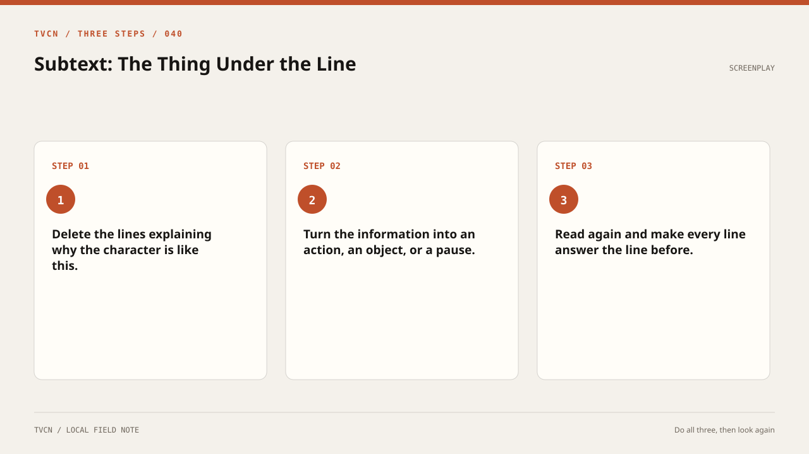

On set
Give every line a hidden action: she says whatever, but closes the menu. Direct the hand, not the line.
Do this
Subtext is saying A while wanting B; the director makes B visible.
- Give each line a hidden action: she says “whatever” and closes the menu.
- Let the actor play the hand, not the line.
- Review that line and action contradict each other and B reads.
Avoid
Do not let the line speak the subtext; once said, it is no longer subtext.
Three-step flow

Three causes
For “Subtext: The Thing Under the Line”, check three directions first. Change one variable, record a 30-second comparison, and see which link the change follows.
| Cause | Signal on set | Five-minute test |
|---|---|---|
| Lines state it | A character says “I want you to stay” and the scene is over | Hide the want in action and other words |
| No hidden goal | The character only completes the surface task and wants nothing from the other person | Give every character an unspeakable aim |
| No pressure | The other person agrees too easily, so subtext has nothing to push | Let them refuse or misunderstand |
On-set diagnosis
- Write one line of what each character really wants; keep it out of the script.
- Ask the actor what they lose if this line fails.
- Play the scene as action without lines and see whether the relationship still reads.
Fix
Subtext is not an explanation hidden under the line; it is the detour a character takes to get something. Give them a reason not to say it, then let them say something else.
- Give each character an aim they cannot state: fear of rejection, loss of face, refusal to admit.
- Make lines do actions: probe, deflect, threaten, appease; not state.
- Let the scene partner resist so the subtext has pressure.
- Hold a pause at the key moment so the audience feels the unsaid line.
Failure cases
With “Subtext: The Thing Under the Line”, these three moves make it worse. Pick one replacement action and do not change three variables at once.
| Failure | Why it gets worse | Replace with |
|---|---|---|
| Let the character say the subtext | The moment the thought is spoken, subtext disappears | Keep the truth in action |
| Add music | The score feels for the audience and the lines get flatter | Change the line and resistance first |
| Hide everything | The scene becomes a puzzle | Keep the surface task clear |
Acceptance table
Acceptance is not “it feels better”; all four must be identifiable, playable and logged.
| Check | Pass line | Log |
|---|---|---|
| Surface task | Each scene has a clear surface goal | Write it per scene |
| Hidden aim | Each character has an unspeakable aim | Character notes |
| Resistance | The partner does not cooperate | Watch the exchange |
| Pause | A key unsaid pause exists | Playback |
Image note. Covers, diagrams and step images on this page are editorial illustrations or structure diagrams, not photographs of a test performed here; they are not evidence of measured gear performance. Where an image is AI-assisted, the caption says so. Read the test conditions in the text before treating an image as proof.